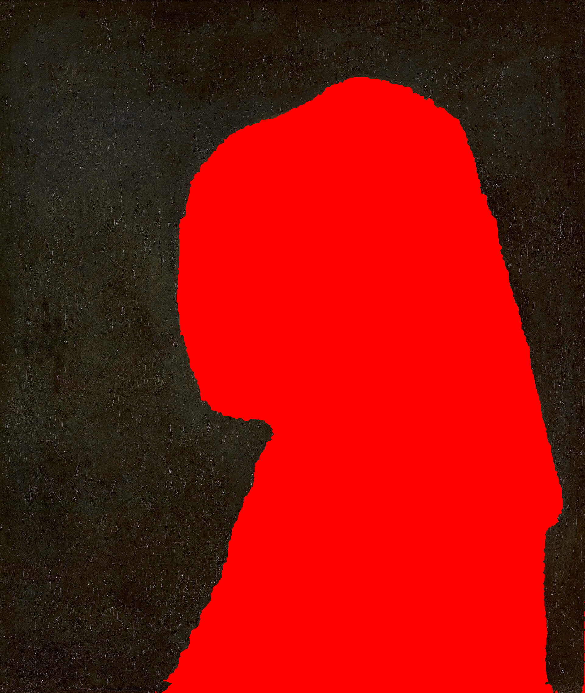
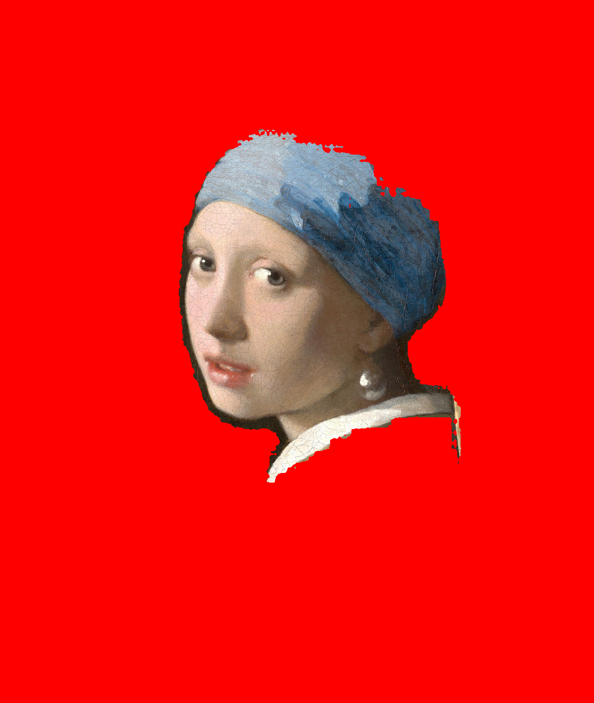
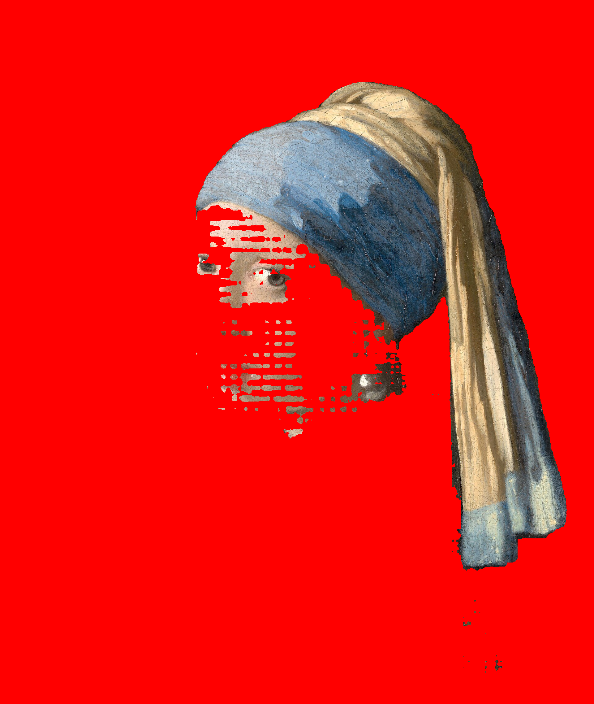
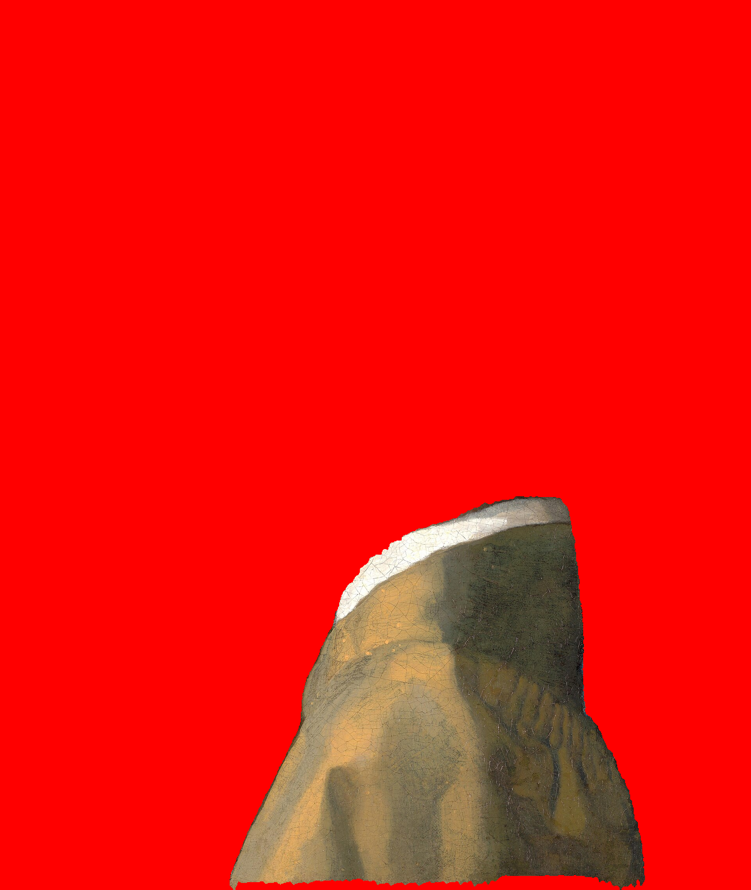
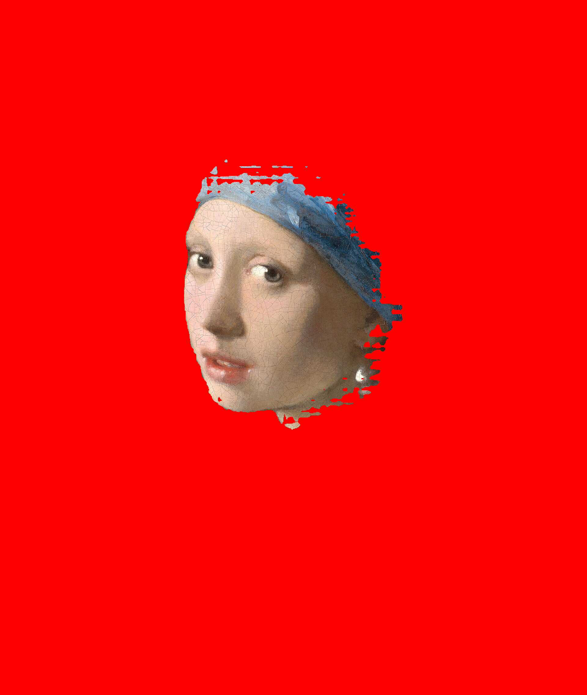
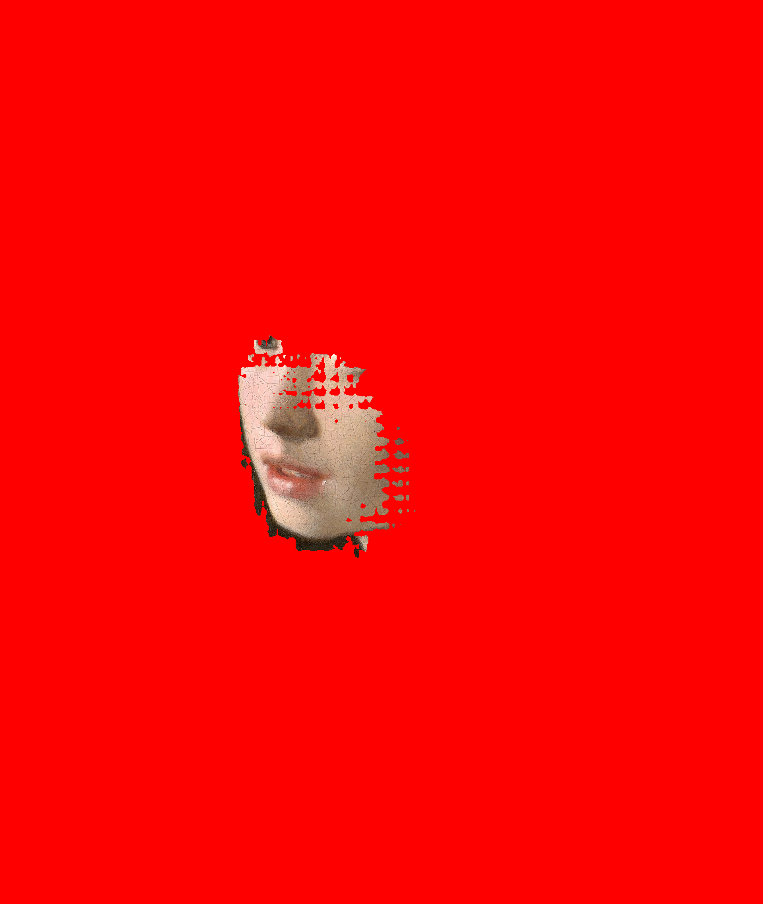
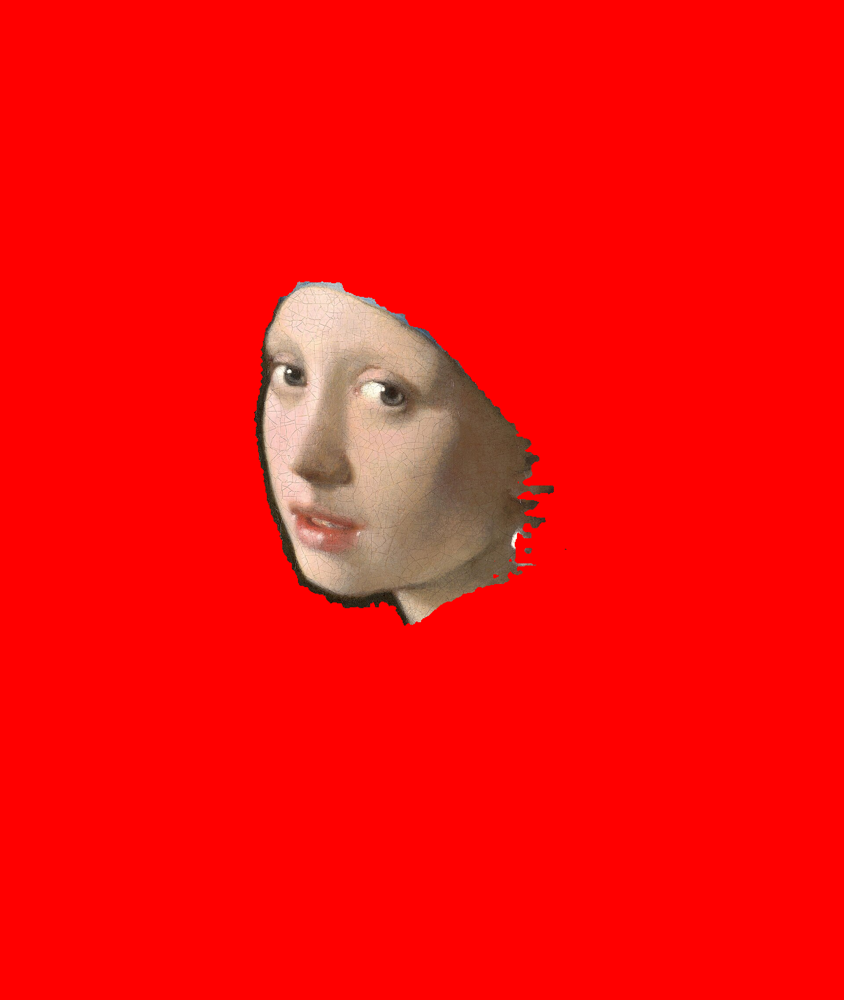

Girl with a Pearl Earring · 1920×2274 · inference at 864×1024




Round 1: generic prompts · Round 2: spatial-anchored prompts with "only" suffix



| Layer | Round 1 | Round 2 (spatial) | Change | Actual target |
|---|---|---|---|---|
| eyes | 7.6% | 9.8% | +2.2% (worse) | <2% |
| lips | 8.9% | 3.3% | -5.6% (smaller) | <1% |
| nose | 14.5% | 8.2% | -6.3% (smaller) | <2% |
Even with significant coverage reduction for lips/nose, the masks visually show face regions, not isolated parts.